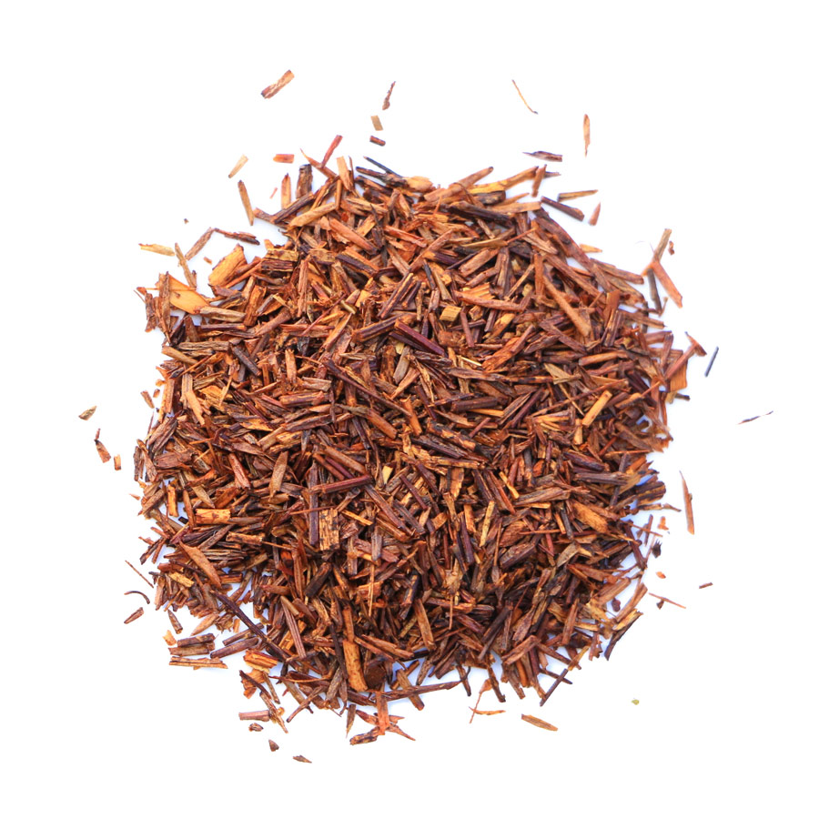
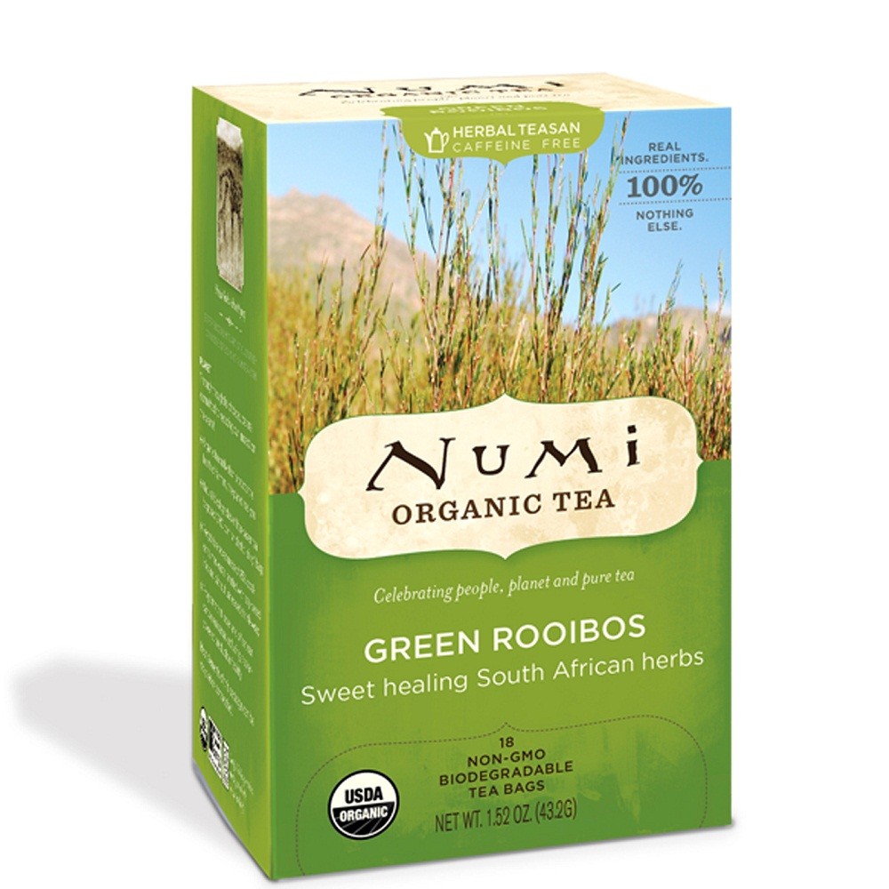

Organic rooibos

Rooibos, or red bush, is a leguminous plant native to South Africa's Western Cape region. Green rooibos, the unfermented form, is more complicated to produce and offers a more delicate flavor.
TASTE
Light, woody taste accented by sweet Honeybush.
CAFFEINELEVEL
HEALTH BENEFITS
Rooibos tea functions as both an anti-inflammatory and an antioxidant, protecting your cells from damage by free radicals and reducing inflammation.
One of rooibos’ benefits is that it’s great for your heart. Rooibos tea contains chrysoeriol, a flavonoid that decreases blood pressure and improves blood circulation. It’s also be linked to lowering bad cholesterol levels.
Strongly connected to rooibos’ ability to strengthen your heart is its direct effect on diabetes. When tested against both diabetes and cancer, rooibos tea showed “significant therapeutic potential for either the prevention of the onset of the two diseases or their progression. In addition, rooibos tea seems to help the immune system produce antibodies necessary to prevent and heal from cancer, allergic reactions and even AIDS.
Drinking rooibos tea is one helpful way to maintain good digestive health
BRANDS TO BUY

Numi offers convenience of a tea bag but with a full leaf quality. They blend premium organic teas and herbs with only 100% real fruits, flowers and spices. They never use “natural” flavorings, perfumes or fragrances. All Numi teas are gluten free.
Numi uses full leaf quality (FOP grade & above) organic tea in all of our products. Full leaf teas steep slowly and evenly, and deliver a smooth, rich flavor.
The brand is widely available at Whole Foods stores, Amazon, and other online stores.